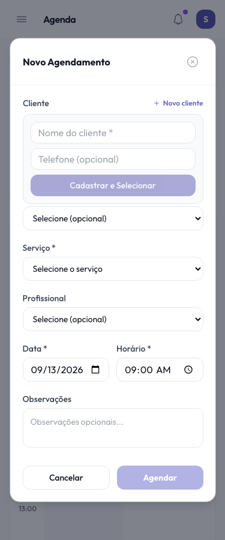

AppBello: antes e depois
Redesign de interface — 13 de setembro de 2026. Landing renderizada pelo Next; telas internas renderizadas com os componentes reais e dados fictícios em ambiente isolado. As capturas não validam operações autenticadas de produção.
Catálogo público · mobile
Modal da agenda no mobile

Escopo e validação